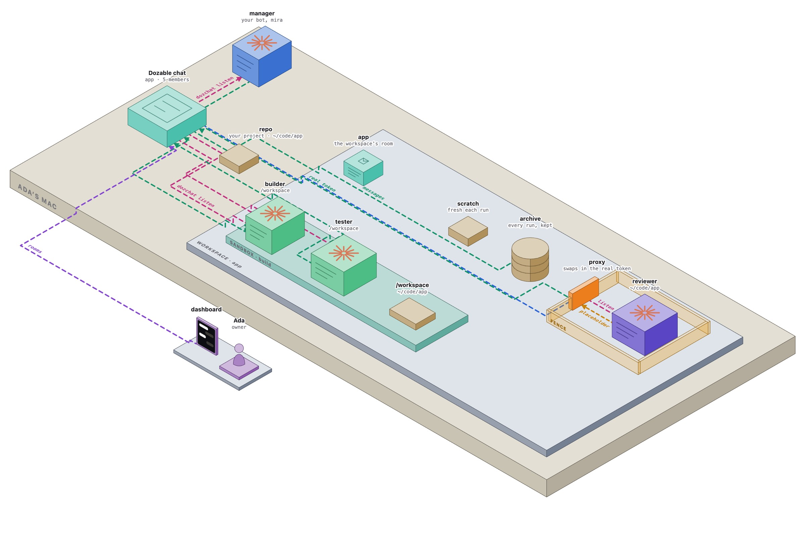

Dozable 0.60 - workspaces for your agent teamwork
Dozable 0.60 runs teams of AI coding agents in workspaces, with a brief, a room, a manager and workers, one unit of work at a time, a journal of each, and the lessons you approve carried into the next.

Introducing workspaces, the way to run a team of AI coding agents on your Mac. A workspace holds the agents, their chat room, the folders they work in and a brief. Agents from any vendor take on the work one unit of work at a time; each is recorded in a journal, and the lessons you approve carry into the next. You watch, talk to them and decide what matters.
It's on the stable channel now, as 0.60.4. This post covers 0.52.0 to 0.60.4; the 0.51 post covers what came before.
Start from a template#
The quickest start is a template. In the dashboard, New workspace opens on five ready-made workspaces, each drawn on its card: One agent, One agent in a Sandbox, Build & review, Fix-it team and Remotion video. Pick one and press Create and start: two clicks, and its agents are up in their room. Custom builds your own in five short steps, drawn as you go.
From a terminal:
doz workspace templates # the templates, their agents and where each runs
doz workspace new app --template solo --folder ~/code/app # One agent, working in your projectWorkspaces#
A workspace is a brief, a room, the folders it works on, and its agents: a manager (one of your Agents / Bots) and workers, each with one task. Chat needs to be on, because the room is where they talk.
doz chat on --name ada # chat on; you are ada in the room
doz workspace new demo --brief "Fix the failing test" --folder ~/code/demo
doz workspace start demo # checks the set-up, posts the brief, opens the first unit of work
doz worker add demo helper --task "Run the tests and report"- Templates and presets set where agents run and their network:
--template ID, or a preset (blank,remotion-video).--dry-runshows what would be made, and makes nothing. - The dashboard now opens on your workspaces. Each has a Home tab with Needs you first, its room, its agents, what it can reach and its runs. Every page from before is under This Mac, and old addresses still work.
- A workspace can be a file in git.
doz workspace plan -f FILEshows what it would do;doz workspace up -f FILEbrings it up.
See Workspaces.
Chat rooms#
A workspace's room is where you and its agents talk: you in the dashboard or a terminal (doz chat send, doz chat read), each agent with its own token. An agent can ask instead of writing: an Ask is a question with options that waits for your answer. Every Ask can be declined and expires, so nothing is ever taken as a yes. Messages, reactions and attachments stay on your Mac. See Chat.

The workspace's page#
Every workspace is drawn on its Home tab, however you made it: the same kind of drawing as the picture at the top of this post, with what is happening now marked on it. Under it come Needs you, its run, its agents, the room's latest lines and what happened recently.
Click the drawing to open it in the workspace editor. Drag a part to move it, and Save keeps its place in the workspace's file. Export downloads the file as YAML, or the drawing as SVG or PNG. Saving never applies a change: doz workspace up -f FILE does. See Space files.
One unit of work at a time, and lessons you approve#
doz workspace run opens a unit of work with a goal (the brief when you give none). One is open at a time, and doz workspace finish closes it and archives its messages, conversations and journal.
The journal is the record of each unit of work: tasks, claims, reviews, findings and the outcome, written by you and by agents you allow. Nothing in it is ever edited; a correction is a new entry.
doz workspace journal demo # this unit of work's entries
doz workspace finish demo # close it and archive it (asks first)
doz workspace retro demo --propose --addendum "Run the linter before the tests"
doz workspace decide demo PROPOSAL apply # or answer the Ask in the room
doz workspace run demo "Now the flaky one" # the next one, with every lesson so farA lesson changes nothing until you approve it. Once approved, every later unit of work opens with it, under "Lessons to apply". Dozable records all of this and enforces no process of its own: you write yours in the brief. See Runs, the journal and lessons.
Where agents run#
Each agent runs in one of three places: in a Sandbox, fenced on your Mac (the default for a workspace's agents), or as you, only when you name it. Your keys never go inside a Sandbox or a fenced place.
A fenced place is a policy, not a shared box: the folders it sees, its network and its credentials. Each session in it gets its own fence built from that policy, so two agents in one place never share a proxy. Sessions on this Mac compares the three in one table.
Agents keep who they are#
- A worker you name lasts with the workspace. Ending it keeps it in the room with its memory, and adding it again brings back the same agent.
doz worker resetclears its memory. - A worker added with only a task belongs to the unit of work, and goes when it ends.
- Each start gives a worker a new chat token, and the one before stops working.
Notices go to whoever can act#
The room shows the journal as it happens: an outcome, or a review that is not met, appears as a card "from NAME's journal". Working notes never do, and anything shaped like a key is redacted.
Dozable's own notices go to the workspace's manager, or to you when there is none: a Claude login that needs signing in again, a site the network keeps refusing, an agent that crashed, a disk running low. A critical one also reaches your Needs you. doz workspace feeds demo shows where each kind goes. See Feeds and notices.
The manual in every doz#
Each release carries its own manual, readable with no network:
doz docs # where it is, and this version's address online
doz docs workspaces # one pageEach version's manual is also online at its own address, such as https://dozable.com/v/0.60.4/llms.txt.
Also new#
- Inside a sandbox, a refused website now says "refused by Dozable's network policy, not a network failure", and names the
doz netcommands that show and allow it. doz execstops a command after 120 seconds and says so;--timeoutgives it longer, anddoz run -dsuits a long job.- You can decline this Mac's Claude login for good:
doz onboard --claude-account none, or laterdoz account default none --decline-mac. Nothing then reads the Mac's login, fenced agents included. doz image save SANDBOX NAMEsaves a sandbox's disk as an image;doz template createstill works for now and says where it moved.- A fenced agent can now reach any HTTPS site its network allows, and a new workspace's agent says it is up straight away.
doz help exit-codeslists every exit code. An invalid value now exits 65 instead of 64; unknown commands and flags stay 64.
Upgrade#
doz upgradedoz upgrade moves you to the newest version on your channel. With Homebrew directly, run brew update first, then brew upgrade dozable/tap/doz. The daemon moves to the new version by itself once nothing is running.
A sandbox that was asleep across the upgrade wakes with everything where it was, but gets the new in-sandbox tools (such as the refused-site message) only at its next cold boot:
doz shutdown my-app # a cold stop that keeps the disk
doz start my-appThen make a first workspace: Getting started takes about 15 minutes. Thank you for using Dozable.